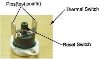
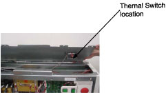
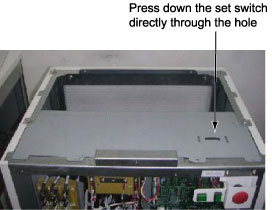

Operating Documentation
Direction 5181166-800, Rev# 7
BrightSpeed Select Service Methods Adv
Operating Documentation |
| Last Revised | November 8, 2005 |
Starting from September 7th, 2005, forward production for NGPDU has started to implement overheat protection circuit to protect possible burning of the discharge resistors. The first unit that has this protection circuit for NGPDU-4 is E4YP05408, for NGPDU-3 is E4RP051167. FMI is scheduled to implement this protection circuit for IB too.
If the QB1 on the NGPDU control board (2334820-2) have short circuit, the discharge resistors will overheat and the protection thermal switch will be opened and cut off the HV DC, then following phenomenon may occurred during scan: System cannot go to next step after clicking Confirm during scan, but return to Resume state. Message is prompted: “Scanner Hardware stopped scan.” Start Scan on the keyboard keeps lighting.
| ELECTROCUTION HAZARD | |
| HIGH VOLTAGES PRESENT. | |
| Use proper lockout/tagout procedures before Servicing PDU. |
Shut down the system, power off NGPDU. Cut off the power from power distribution box and use proper Lockout/Tagout procedures.
Use the DVM to test the two pins of Thermal Switch. If they’re open, it indicates that the QB1 on the control board has been short-circuited. Refer to Illustration 1
Replace Control Board of NGPDU.
Press down the reset switch on the thermal switch. Use the DVM to test the two pins of the thermal switch to make sure it’s closed. Refer to Illustration 2 and 3
Illustration 1: Thermal Switch

Illustration 2: Thermal Switch Location

Illustration 3: Sheet Metal
